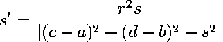
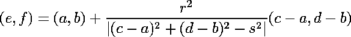

| Inversion takes circles to circles, provided we are a bit generous with the
definition of circle. |
| Suppose A is a circle with center (a,b) and radius r, and B is a
circle with center (c,d) and radius s. |
| First, suppose (a,b) does not lie on the circle B. Then the inverse
of B in A is the circle B' with radius |
|  |
| and center |
|  |
| If (a,b) does lie on the circle B, then the inverse of B in A is a
straight line. Which line can be found by inverting any two points of B,
except for (a,b). |